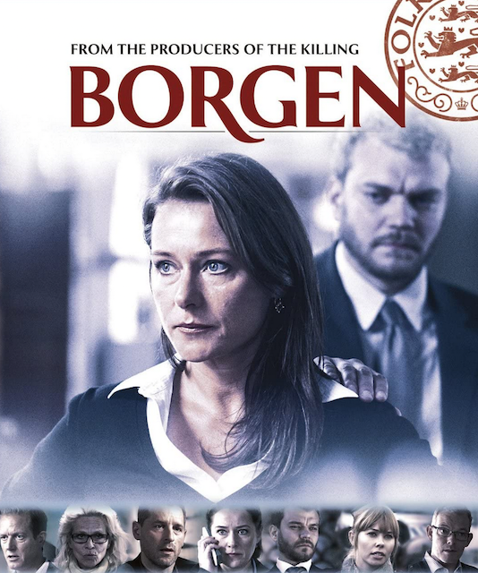

Wednesday, June 30, 2021


According to the Foreign Service Institute, Danish is a Category 1 language. It takes 575-600 hours of deliberate practice to gain "general professional proficiency." It's encouraging that to read, speak and write at a high level takes roughly 500 hours. Good to know, right? :)
Personally, I don't always feel that I am making progress. With this rough number of hours as a goal, tracking my progress becomes a little more like a game. I have been tracking deliberate practice for 2021.
To start having fun with tracking your progress, download the Tally app (iPhone), or Counter app (Android).
-Group activities with svigerfamilien
-Danish class (including speaking Danish during breaks)
-Any Danish programs or films that need active listenting and reading Danish subtitles
-Time spent completing homework assignments
-Free grammar exercises on the wonderful basby.dk
-Networking or socializing with classmates in Danish outside of class
I did (2) timed practice tests in the week leading up to the exam.
You can find practice tests at modultest.dk.
Use the practice tests to learn the format of the test. Use the scoring as feedback to see which areas need more work. Develop strategies that will improve your performance and try to implement them, or keep reading.
If my first practice test had been real, I would not have passed. There were too many errors in the Reading section, and I did not complete the Written exercise in time.
For more practice with the Written exam, check out the Learn Danish blog which has free, downloadable resources.
There are (4) sections and (11) exercises total. The entire exam takes roughly 3 hours.
Lytning (3 exercises, 5 min each)
Læsning (4 exercises, 55 minutes total)
Skrivning (2 exercises, 45 minutes each)
og Mundtlig (2 exercises, 5 minutes each)
Lytning was my strongest area. This was not a surprise. Most of my listening practice happens while I'm doing activites with svigerfamilien on weekends. I try to follow the conversations, ask when I don't understand, and join in where I can. På dansk!
Another way I practice listening is by watching episodes of Rita (2012) or Borgen (2010) with Danish subtitles. Watch once to enjoy it, twice to understand it, a third time to learn "faste udtryk" and new expressions.
The trick is not to get bored with something that is familiar, but to keep looking for something new or refine what you "know". It seems obvious, but try to always build on what you know.
Here is a quick list of entertaining Danish films to practice with:
If you want a laugh and a challenge, check out Micheal Schøt. In his NyUgesTaler he discusses relevent political happenings every week.


Listen to Zetland articles of interest. Read along with the original text as the author narrates their article in the app. It's nice that you can pause and rewind the audio while reading along. (I wish there was a feature change the playback speed.) Overall, this is a great tool to expand vocabulary and learn about relevant subjects beyond Danish textbooks. Full membership costs ~130 kr/ md.
Take an episode of the Fries Before Guys podcast for a walk. I find this material challenging, and that it can be a good space to learn current slang and faste udtryk.
Alternatively, here are some charming/ funny Danish songs I dare you to learn:
The mistakes I made with the "kortsvar" were the answers that requried me to write down numbers. I spelled "millioner" and "billiarder" wrong. My work-around strategy if you're not certain how to spell a number is to write the numbers numerically instead.
According to the practice test, "50.000.000" works as well as "halvtreds millioner". And I wouldn't have seen the list of acceptable answers if I had not done the practice test.
(The answer key lists all possible answers.)
Only answer the question that are being asked. For example. One real test question asked,
What was stolen from the local business you've just heard about?" And I could remember hearing the answer was "x million cigarettes".
In the last minute of the test, I changed my answer to "cigarettes" to avoid misspeling the precise number. This was an acceptable answer because all the test asked was "What" was stolen, not "How many of what". Avoid answering more than the test requires in the kortsvar sections.
Læsning had the most mistakes. General takeaways were:
The answers I changed last minute because I second-guessed ended up being wrong. The original answer turned out to be correct. This happened more than once.
From the practice tests, it was clear that I was using most of the time to do the exercises. There was almost no time left over to go back and check my work.
1) Skim through the material first
Get familiar with how many pages are in the text you are reading from. Skim the questions to see what you are being asked.
One one practice test, I struggled to find an answer because I didn't realize there was a third page of material to comb through. Avoid this by scanning all of the material visually to make sure you're not missing anything.
2) Mark up the page with a pencil
Circle or underline the answers as you find them in the text. Write the answers on scratch paper as you go. That way, when you fill in the formal answer sheet, you are also double-checking your work.
3) Work quickly
Focus on answering the question and finding the answer in the text. Skim the text for key words to answer the question.
Skip a question you're not sure about, then come back to it later.
4) Don't try to understand everything in the text
That's not what this is about. We are being tested on how efficiently we can find the right answer. Not how well we understand the complete text.
5) Ask why is this the best answer
In the section with missing sentences, read the sentences that come before and after the gap. Write the 1 or 2 closest answers that fit in the gap with you pencil and keep moving.
At the end, if you have used an answer twice, have a small argument for why one answer works better than the other.
6) Start reading from the bottom up
In the section where you have to match a paragraph to a person, start by reading the last paragraph. Work your way up to the first in reverse order.
Skim and keep an eye out for any opinion expressed in each paragraph. Mark with your pencil any line where the person says "tror/synes".
Or where they express any positive or negative opinions. When you find the clear opinion, do a quick check to see if it is a match for any of the choices and keep moving.
I bombed this section in the practice test because I spent too much time looking up words in my "ordbog". I had gotten used to using online tools like Google Translate and Ordnet.dk to look words up quickly.
And I underestimated the difference between writing by hand versus on a computer.
While I had been good about doing written homework assignments, I never set a time limit. Having to write coherently, by hand and under time pressure made me panic.
Rather than using time to search for words you don't know off hand, try to use what you know. It sounds funny, but lower your ambitions.
The more you can use what you know, the more time you will save.
Ask your teacher or moderator if you can use a 500-verbs list during the written test. Use it with your dictionary (which you should also try to bring yourself.)
Hope you find this useful in your language learning journey. Would love to hear about your experience, any strategies or resources you have found.
Held og lykke/ venlige hilsner
@zowdk